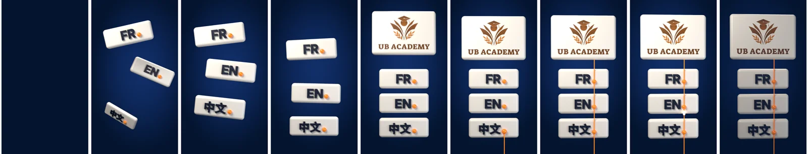

Prototype 3D : « Trois langues, une direction »
Statut : rendu et vérifié avec Blender 5.2.3 LTS
Page de travail, non publiée, pour comparer le prototype 3D à l'animation actuelle du site. Rien n'a été changé sur le site.
Les images clés

Comparaison honnête
| Animation actuelle (20 s) | Prototype 3D (8 s) | |
|---|---|---|
| Ce qu'elle dit | Cours en direct, correction, objectifs, invitation à écrire | Trois langues, une seule académie. Aucun argument, aucune phrase |
| Ressenti | Clair, pédagogique, éditorial | Premium, matière, lumière, profondeur |
| Poids (MP4) | 0,80 Mo pour 20 s | POIDS_3D |
| Format idéal | Site (section « en 20 secondes ») | Réseaux sociaux (statut WhatsApp, Reels, Stories), en option sur le site |
Recommandation
Ne pas remplacer l'animation de 20 s, ni l'y insérer. Elle seule explique l'offre ; la 3D ne fait que la mettre en scène. Coller les 8 s de 3D devant retarderait le message, et les deux styles (2D et 3D) se heurteraient.
Usage conseillé : réseaux sociaux, où un 9:16 de 8 s en boucle est le format natif. Sur le site, seulement si vous l'aimez : en petit, à côté du titre de la section « Les cours », sur ordinateur uniquement. La proposition est prête dans integration/, non activée.